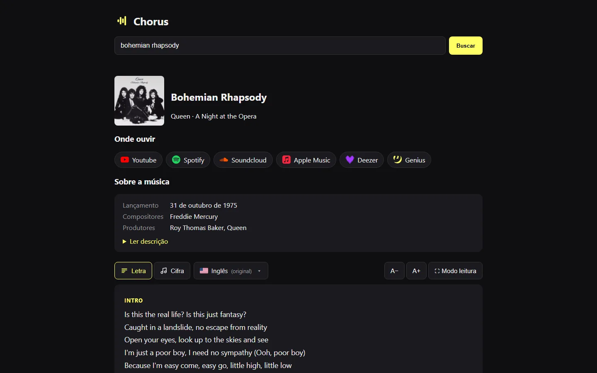
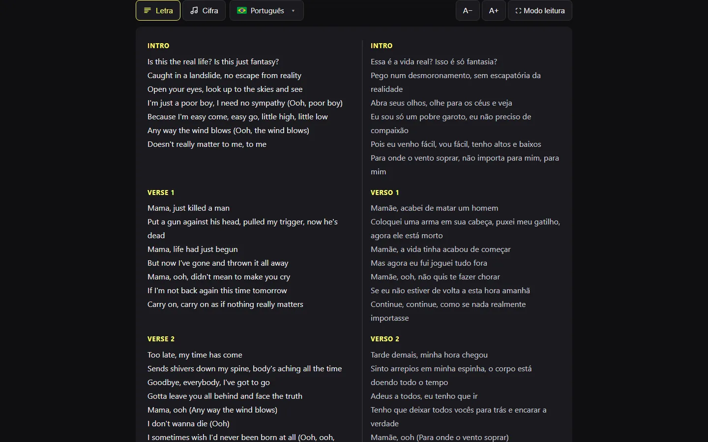
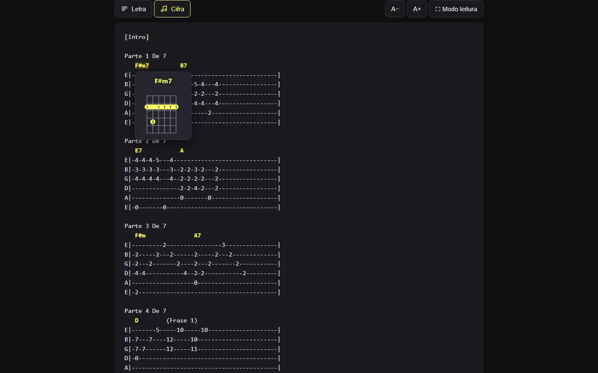
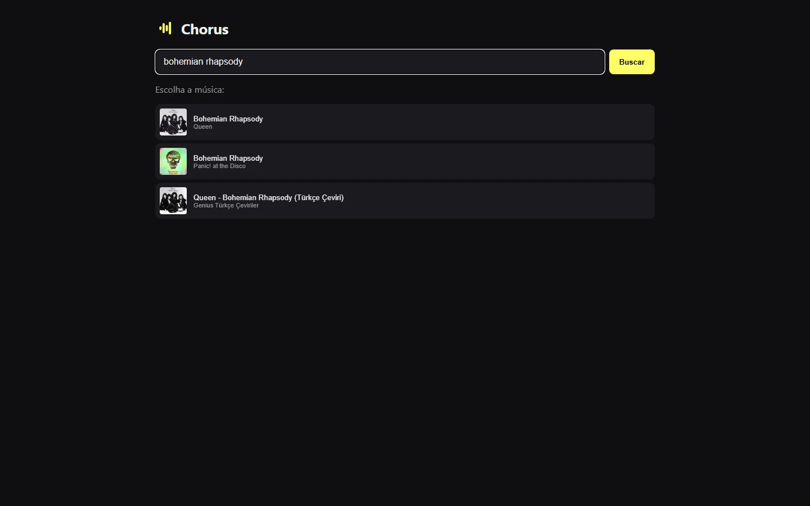

Chorus
Digite o nome de uma música e veja a letra, a tradução, a cifra e onde ouvir, tudo numa página só. Sem cadastro e sem anúncio.Type a song's name and get the lyrics, the translation, the chords and where to listen, all on one page. No sign-up and no ads.


 0
0

O que fazWhat it does
- Busca enquanto digita: os resultados aparecem meio segundo depois que você para de digitar.
- Search as you type: results show up half a second after you stop typing.
- Onde ouvir: links para YouTube, Spotify, Apple Music, SoundCloud e Deezer, com o ícone de cada um.
- Where to listen: links to YouTube, Spotify, Apple Music, SoundCloud and Deezer, each with its icon.
- Traduções lado a lado: um menu com todas as traduções que o Genius tiver, com bandeira. Ao escolher uma, a original e a tradução aparecem estrofe por estrofe.
- Side-by-side translations: a menu with every translation Genius has, with flags. Pick one and the original and the translation line up verse by verse.
- Letra reserva: quando o Genius não tem a letra, o Chorus busca no Letras.mus.br, o que ajuda bastante com música brasileira.
- Fallback lyrics: when Genius has no lyrics, Chorus looks them up on Letras.mus.br, which helps a lot with Brazilian music.
- Cifra com diagrama: a cifra do Cifra Club com os acordes destacados. Passe o mouse num acorde e veja como tocar no violão, com dedos, pestana e cordas soltas.
- Chords with diagrams: the Cifra Club chord sheet with chords highlighted. Hover a chord to see how to play it on guitar, with fingers, barre and open strings.
- Modo leitura: letra ou cifra em tela cheia, com A− / A+ para ajustar a fonte, e o tamanho fica salvo no navegador.
- Reading mode: lyrics or chords full screen, with A− / A+ to size the font, remembered by the browser.
- Sobre a música e mais do artista: lançamento, compositores, produtores e as músicas mais populares do mesmo artista.
- About the song and more by the artist: release date, writers, producers and the artist's most popular songs.
Como funcionaHow it works
Uma API em NestJS recebe a busca e chama um scraper em Python com o Scrapling, que lê na hora as páginas do Genius (busca, letra, traduções e links), do Letras.mus.br (letra reserva) e do Cifra Club (cifra). O termo digitado vai como argumento via execFile, nunca por um shell, e só é aceito resultado com o mesmo título da música.A NestJS API takes the search and calls a Python scraper built on Scrapling, which reads Genius (search, lyrics, translations and links), Letras.mus.br (fallback lyrics) and Cifra Club (chords) on the fly. The search term goes in as an argument through execFile, never through a shell, and only results with the same song title are accepted.
Como rodarRun it
git clone https://github.com/SamuelSchutz13/Chorus.git cd Chorus pip install scrapling npm install npm start # http://localhost:3000
ImagensImages


